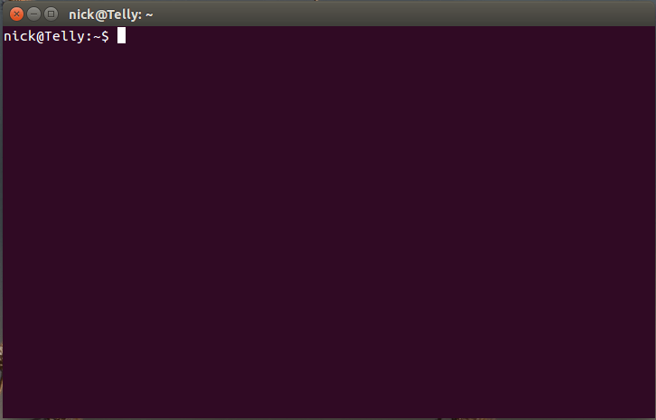
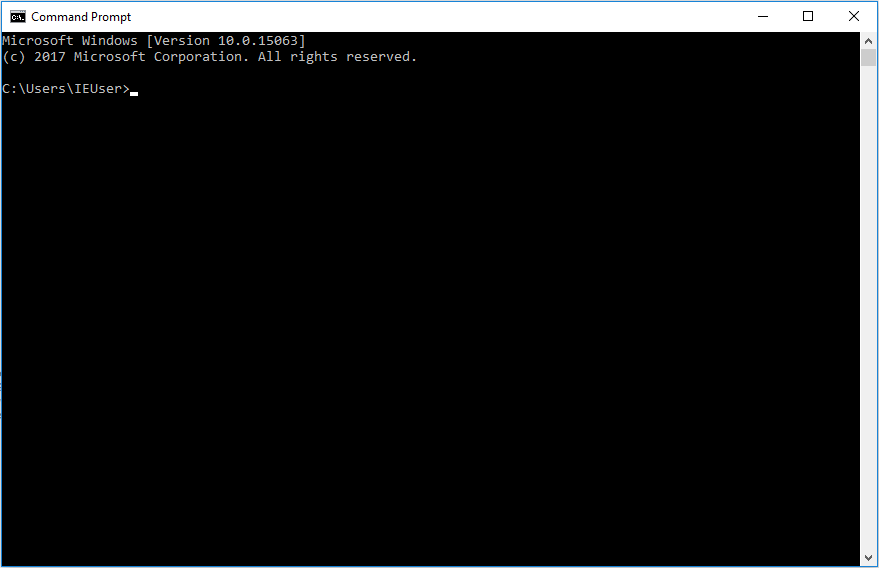

O que é Terminal?
Basicamente, terminal é aquela famosa tela preta na qual você digita comandos para dar instruções para um computador e visualizar informações dessa máquina.
Ou seja, ele serve para você executar tarefas no computador sem utilizar a interface gráfica, com pastinhas e ícones, ou o bom e velho mouse.
Todos os comandos são executados através de digitação de texto puro.
Antigamente, lá pela década de 1980, os terminais eram associados a sistemas muito simples, sem unidade de processamento central própria.
Isso significa que eles não tinham a capacidade de processar comandos de maneira independente de um servidor de terminais, isto é, uma máquina muito mais potente.
Portanto, esse tipo de terminal, chamada de terminal burro, era apenas um monitor de vídeo e teclado ligados a um servidor de terminais, como na imagem abaixo.
Terminal TeleVideo modelo 925, fabricado por volta de 1982
Com o passar do tempo, esse modelo foi se tornando cada vez mais antiquado. Hoje em dia, a solução mais comum é uma rede composta por vários PCs com capacidade de processamento interno e um servidor que apenas centraliza arquivos, conexão com a Internet etc.
Ao contrário dos terminais burros, os terminais inteligentes são aqueles que têm a habilidade de processar essas sequências de comandos sem depender de nenhuma máquina externa.
O computador do seu trabalho é um exemplo disso. Nele, você executa todas as suas atividades e, no máximo, salva os arquivos gerados em um servidor na rede da empresa, para compartilhar com os colegas ou realizar um backup. Outro excelente exemplo de terminal inteligente são os computadores dos programadores. Nessas máquinas são instalados softwares que permitem a criação de novos softwares por meio de programação, tudo isso implementado localmente no próprio computador do programador.

